THE GREAT HOUSES OF GALLIFREY
The Heart of the Spiral Politic
"Tradition, Obedience, Honor, Understanding, Loyalty, and Respect"
-The Philosophy of Gallifrey
TABLE OF CONTENTS
Click on paragraphs to see color coding for sources
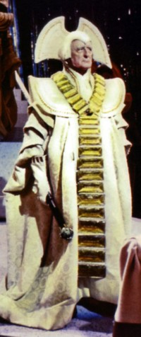
The Head of the Presidency
"Lord
President. May the Star of Rassilon guide you, His Wisdom inform you,
and His Sash be your protection in the vastness of your duties."
THE HEAD OF THE PRESIDENCY
Lord President of Gallifrey, the Inheritance of Rassilon, President of the Supreme Council,
The Lord
(or Lady) High President of the Supreme Council of Gallifrey and all of her Dominions, rules Gallifrey and has the obedience of all Colleges. The
Head of the Presidency is seen as the physical manifestation of the
Laws of Time and and avatar for the power of the Time Lords. He is the holder of the Wisdom of Rassilon, Preserver of the Matrix, Guardian of the Legacy of Omega,
(probably) the Keeper of the Legacy of Rassilon, Defender of the Laws
of Time, and Protector of Gallifrey. He is sworn to follow the
Wisdom of Rassilon and the Law of Gallifrrey. He also carries the title First Time Lord. Like
the Chancellor, the President is addressed as "Your
Excellency." When Time Lords salute the Lord President they hold
their right hand up with the palm facing outwards towards the President. The chapters that are not represented by the
current Head of the Presidency are considered to be independent, and
their Lords are often know collectively as Independents.
The Presidential Charter (likely part of the Constitution) lists the powers of the Lord President. Technically he has near absolute power, including the right to order executions, however, the Constitution states that the President cannot give orders directly to the Chancellor. However all of the President instructions must go through the Inner Council before being acted upon, andin an emergency session, the
Inner Council can override the President at any time with a unanimous vote. As Protector of Gallifrey, the President has direct control over all aspects of Gallifrey's defenses and has access to
all of Gallifrey’s defense codes. However the CIA can override him in matters of off world security. In extreme circumstances, President even has the authority to send temporally reactive
update signals back in time to update security systems
undoing a breach that has already begun. The
President is entrusted with many of Gallifrey’s most closely guarded
secrets, including the Jaskud Records, the War Perceptors, the Cavux
Imperatives, and the Oubliette of Eternity. The Black Files hold
the most sensitive of the Time Lord’s secrets. While officially
they un-exist they are infact, held in an office in the heart of an
asteroid in a pocked dimension which is a remnant of a redundant
timeline. The President is the only Time Lord that knows that the Time Lords' duty is to enforce the balance of the Guardians and that they are directly answerable to the Guardians. It is also likely that the President knows that Omega survived the detonation of the star Quaba. Up until Arc of Infinity the Presidential Code was 4544553916592.
The Presidency consists
of three Time Lords, the Lord President (or Head), and two attaches who function as secretaries, and advisors. The attaches are not allowed
to serve on the High Council. For some of Gallifrey's history it was traditional for each President to have a Presidential CAT (Calculating Animal with a Tail). This
tradition was discontinued when the Doctor was attending the Time
Academy. A small amount of the Elixir of Life (bottled by the
Sisterhood of the Flame on the world of Karn) is kept for the Lord
President in case of medical emergencies. The President has his own Presidential Personal Security Guards. The
stasers carried by these guards can not be
set for stun. At their lowest setting they will induce a regeneration
in any Gallifrey who is hit by one.
The Sash of Rassilon stays with the Lord President and is the chief symbol of office. The first time the President Elect puts on the Sash of Rassilon he is altered to become Biodata Ultra-Aware, which allows
him to predict and manipulate biodata in a way no other Time Lord can. The Lord President is, metaphysically linked with the Laws of Time. These modifications also give him the presidential bio-code which
allows him to access the Matrix and the Matrix doors. The President
is the Preserver of the Matrix and holds the Matrix
Crown which allows him direct access to the entire Matrix and its predictive abilities
(though its use
is quite stressful and thus reserved for coronations
and emergencies).
Once they don the Matrix Crown a President becomes part of the Matrix
via a living connection to Gallifrey. The President wears the Sash of Rassilon on ceremonial occasions and
carries the Rod of Rassilon. The Lord President and the Castellan are the only Time Lords issued with a transduction buffer. These devices let them transduct any time travel capsule on Gallifrey to anywhere else on the planet. If the President was to have access to the Great Key they would have unlimited use of
the Power of the Time Lords and have complete access to all the different Universes. While the President
traditionally wears white robes, this is not required, and some prefer to wear the colors
of their chapter. The President wears the Belt of Omega. The Presidential
Palace is located on level 5 of the Citadel (see Sector 2 of the Citadel above).
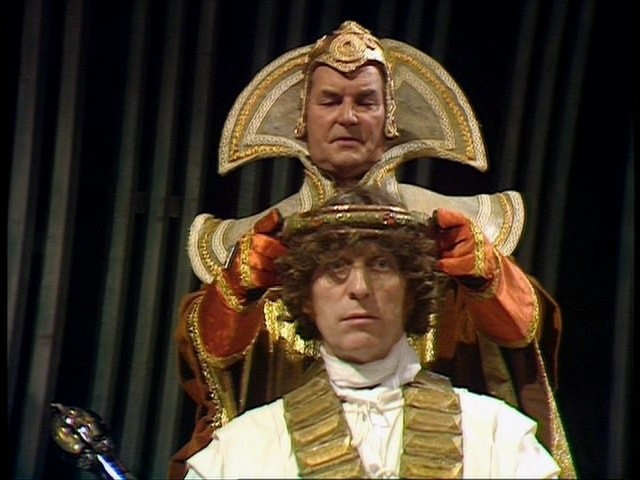
Inauguration of the 407th President Approximately
every thousand years the Time Lords would deliberately loom a
collection of potential leaders, one of whom would become the next Lord
President of Gallifrey. Each
President
has the right to name his successor. This is usually done at a
Resignation Day Ceremony when reading the Resignation Honors List. More
then 50 members of the Chancellery Guard will be present for a
Presidential
resignation. The Cardinals are responsible for organizing Resignation Day ceremonies.
These successors must be certified and approved by High Council election ballot, but this is generally a formality. Its almost unheard for anyone other then the named successor to win.
The tradition for this started with President Pundat who had the Constitution amended.
President Romana would have this amendment abolished and expand
presidential voting rights to the entire populace of Gallifrey. While
the chosen successor generally stands unopposed, Article 17 of the Gallifreyan Constitution, allows almost any Time Lord to declare themselves as a candidate during an election. The
only exception being a former president who was impeached. However most
Time Lords serve on the High Council before becoming Lord President.All voting for a presidential election occurs in the Capitol (this might mean that only the Time Lords get to vote for the President).
During the time between a Presidential Resignation and the formal ordination of the President-Elect, the Chancellor carries the title of Over-Chancellor and the High Council is know as the Supreme Council (as it has supreme power for that period).It
should be noted that without a sitting President the Supreme Council
technically can not ratify anything. However this law has been known to
be deliberately overlooked.
If the President knows they are going to absent for a time, they can nominate another Time Lord (usually a former retired president or the Chancellor), to serve as a Deputy or Acting President. The Cardinals cannot over-rule this nomination. The In Absentia in Chaotica Protocol (which
was created during the reign of Pandak II) state that if an
catastrophic emergency occurs when the Lord President is off-world then
the current (or former) High Council member located in the most
advantageous position to deal with the crisis becomes the
Acting-President for the duration of the crisis (or until the President
returns). If time permits, the Gallifreyan Constitution allows the High Council to appoint a Time Lord to serve as Acting President. This
appointment must be ratified by the Chancellor. If the Lord President
still lives but is absent then the Council have the power to formally
remove him from office, allowing an election to occur.
Should a president resign or die without naming a successor, an election must be held within 48 hours. Despite
the urgency to decide upon a President-Elect, it normally takes years
to plan and assemble a Presidential Ordination. President-elects do not
obtain full access to the powers of the Head of the Presidency, most
notably full access to the Matrix, until this ceremony is complete. The
Ordination traditionally takes place in the Panopticon, but some have
chose Pandak's Square for their ceremony. Presidential Ordinations, and other formal ceremonies such as the appointment of a Chancellor, are lead by Gold Usher
(also known as the Dromeain Archibaptirx). The handing over of the
Sash from the previous president to the new one is the key symbolic and
legal moment of the transfer of power. At all such appointments Gold Usher will rap his staff down three times. Once for wisdom, once for honor, and once for tradition. Computers paint pictures of every Presidential Ordination. It is an old and inviolable tradition for a new President to forgive and pardon all political prisoners as his first act in office.
A sitting Lord President can not be indicted or put on trial, but Presidents can be impeached by a vote of no-confidence from the High Council. A President can be called to give evidence in judicial investigation.
After a certain amount of time (at least 900 years) President's face mandatory retirement. If you have served as President before, you must regenerate before serving again.Even after he leaves office, an ex-president keeps the biodata modifications, (including the link to the Laws of Time) the Sash granted him. Ex-presidents appear to retain
the right to access the Matrix's predictive abilities and call for Presidential Inquires. As of President Flavia there have been 412 Presidents of Gallifrey.
ORDINAL-GENERAL
Auld Mortality
The title of Ordinal-General is given to the Gallifreyan who
has been chosen to become the next Auld Mortality after his final
Deathday. When he dies, his spectral form takes on a ghostly form and
becomes Auld Mortality. This dark spectral presence haunts the current
President of Gallifrey, reminding him that life and power is fleeting
and that this death is certain. Computers paint pictures of every
Presidential Ordination. Auld Mortality can be seen lurking in the
shadows of each of these pictures. Ordinal-Generals have no staff, and
no office. The existence of Auld Mortality is known only to the Head of
the Presidency.
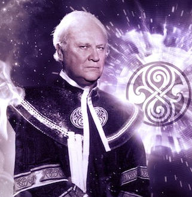
The Lord Burner
LORD BURNER
The
Lord Burner is the secret personal assassin of the Lord President. If a
President so desires, he can issue burn edicts into the Matrix. This
edict is then relayed directly into the mind of the Burner, who will assassinate whoever the edict tells him to. Burn Edicts are
believed to be ceremonial, but in reality the Lord Burner still acts on
behalf of many Lord Presidents. Only two people have ever survived a
Burn Edict - Braxiatel and the Doctor.
POLICY ADJUSTMENT BUREAU
The PAB use time rings to travel back in time and alert the Lord
President when they are about to make a decision that will have
negative consequences. The activities of the PAB are, by necessity, a
violation of the Laws of Time. In extreme circumstances, President even has the authority to send temporally reactive
update signals back in time using the PAB to update security systems
undoing a breach that has already begun. While this organization has existed for
several generations, the official, and unofficial records do not
acknowledge the existence of the Policy Adjustment Bureau and only the
President has access to their findings or awareness of their existence.
There is also no mention of the Bureau in the Black Files. The Doctor
shuts down the Bureau shortly after the end of the Borusa Presidency.
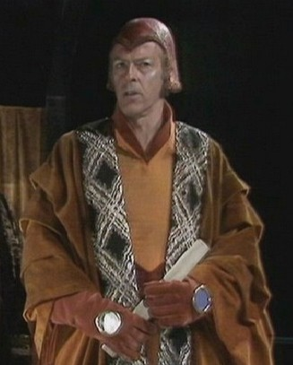
Prydonian Chancellor
THE LORD HIGH CHANCELLOR OF ALL GALLIFREY
The Lord High Chancellor of All Gallifrey serves as the head of the Chancellery and the administrative head of the government. He handles the day to day matters of the Citadel and the various Councils. This
includes maintain the separation of powers by resolving issues of
jurisdiction between various officials and agencies.The
Chancellor represents and speaks for the Inner Council to the rest of
the High Council. Its very likely that the Chancellor is head of the judiciary
and the Time Academy. One of his jobs is to limit the power of the Lord President. The Constitution states that the President cannot give direct orders the Chancellor, instead such instructions must first be approved by the Inner Council. The Chancellor is also responsible for holding the Great Key in secret. Like the President, he is addressed as "Your Excellency" and has his own honor guard. During the terms of a weak-willed President, the Chancellor can effectively end up running the planet.
The Chancellor is appointed by the High Council and ratified by the President. Ever
since the Morbius Crisis, it has been mandatory that the High Chancellor
is always a member of the same Chapter as the President. After a Presidential Resignation, but before the new President-Elect is sworn in, the Chancellor carries the title of Over-Chancellor.
Traditionally the post of Vice-President was
separate from the post of Chancellor, however in the modern era the
Chancellor also handles the powers Vice-President. The
Vice-President (and, in the modern era the Chancellor) is usually the
Presidential Representative to Non-Gallifreyan Dignitaries and is
responsible for representing the President to other Time Aware Races.
Thus the Chancellor generally possesses the Ambassadorial TARDIS. These Royal Timeships have a Regeneration Facility that can pull your mind into a computer while the body is restored. There
is generally one time aware species in every civilized sector of the
Milky Way. This is true for almost every millenium. They probably handle all interactions with the Vanguard Alliance of Space Time (VAST). VAST
was created by the Time Lords right after the Minyos disaster in order
to help monitor other temporal powers. The VAST is made up of the
temporal masters of various time active species, including
the Time Lords, the Noctures (sp?), the Nemba (sp?), the Warriors,
the Drone Maidens, the Glints (sp?), the Rask (sp?) Knights, and the
Legions of the Haral (sp?). The VAST is a secret organization and the
Doctor hadn’t heard of them before the events of The Box of Terror.
The Vice-President (and, in the modern era the Chancellor) serves as Gallifrey's Security Secretary, overseeing the Chancellery Gaurd, the Castellan and the Watch. As head of the Chancellery he has his own Personal Security Guards. He is also responsible for coordinating the Watch with the CIA. In the modern era, the Co-ordinator of the CIA reports directly to the Chancellor. The robes the Chancellor wears are traditionally the color of their chapter but with golden trim.
In
the decades right before the Time War the position of Chancellor would
be broken up into Vice-President, Chancellor of Time Past, Chancellor
of Time Present, Chancellor of Parallel, and Chancellor of Time Future.
Since Chancellors are also the official Ambassadors of Gallifrey each
of these new Chancellor's is probably tasked with representing the
Great Houses to the temporal powers of the past, future, and parallel
realities. Rassilon would replace the position with the office of Prime Minister for early years of the Time War before restoring it.
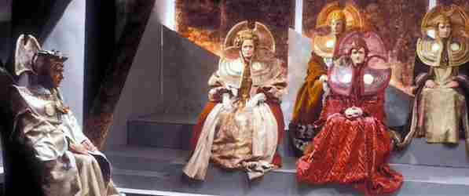
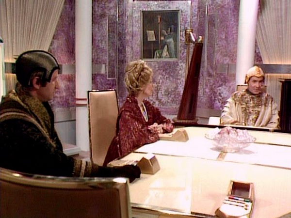
The Inner Council in the Great Hall of Time and the Inner Council Room
THE INNER COUNCIL
The Inner Council is made up of the
High Offices of Gallifrey, that is Lord President, the Chancellor (Vice-President) and the
High
Cardinals.
Together, these most senior Time Lords of the Inner Council
represent the most powerful of the Great Houses of Gallifrey.Traditionally there are only
5 members of the Inner Council, but,
throughout
Gallifrey's History the number has ranged from 3 to 7. President Borusa
decried that the Castellan be included on the Council. Despite the various elections and appointments, the actual Houses represented on the Inner Council rarely change, and it is
very rare for any Newblood House to be represented at all. In most cases, members of the Inner Council are between 6,000 and 10,000 years old.
The Inner Council interacts directly with the Head of the Presidency, and carries his orders to the rest of the Time Lords. During Emergency Sessions, the Inner Council can override the President's authority with a unanimous vote,
for example, Chapter 14, paragraph 6 of the Constitution states - If the president is emotionally compromised by diplomatic
circumstances, the Inner Council can vote in favor of military action without his or her final approval. Every 150 years the entire Inner Council will renew
their Vows of Reaffirmation to the Dromeian Archibaptrix. This
ceremony confirms the council’s allegiance to Gallifrey.
Normally the Inner Council meets in the
Great Hall of Time where one of the Matrix Portals is mounted in it. But nested into one of the alcoves in the Presidential Palace is a the Inner Council Room which was intended
to be a private area for the President to meet with the rest of the Inner Council
in secret. Like the Great Hall of Time, this room has a Matrix Portal mounted above the debating table. This room is only used about once every thousand years and serves as a storage for lesser know artifacts of Rassilon. Only Inner Council members can authorize the unsealing of the Panoptican Hall.
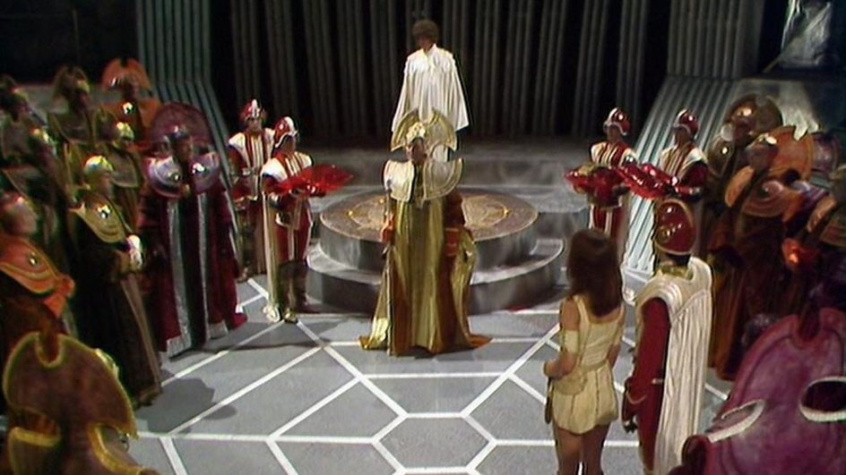
The High Council at a Presidential Ordination and the Seal of the High Council
THE HIGH COUNCIL OF THE TIME LORDS OF GALLIFREY
The Twenty-Four, The Supreme Council
The High Council is made up of the Inner Council and the19 Cardinals appointed by the Parliament, for a total membership of 24. Indeed the council is sometimes know simply as 'The Twenty-Four.' Traditionally
these appointments were given to those Cardinals who had served the
longest in Parliament (though sometimes a Time Lord would refuse the
job). These Time Lords are generally
between 3,000 and 8,000 years old and it is very rare for a Time Lord to achieve a position on the council at less then 2000 years of age. The positions of the Chancellor and the other Prime/Lord Cardinals are ratified by the other members of the High Council and confirmed by the President. The
counsellors generally serve until retirement, but they can be removed
by the Lord President or by a 1/3 petition by all the Time Lords.
Below the High Cardinals of the Inner Council are the six Prime Cardinals (one for each chapter),
and 11 Lord Cardinals. Later the positions of Keeper (aka Coordinator) of the Matrix, and Castellan (commands the Chancellery Guard and the Watch) were made non-voting members of the Council. Since Castellans
aren't always Time Lords this is the
only way a non-Time Lord can serve on the Council. High Council members are forbidden from serving in the Parliament or on the Supreme Court during their term as counsellors. Chapter Cardinals do not serve on the High Council. Aliens are never allowed to serve on the High Council.
The
councilors usually meet in the circular High Council Chamber of
Congress. The more important a councilor is the closer to the ground
level of the chamber they will be seated. High-benchers are consider to
be insignificant. The High Council sets policy and is responsible for most of the daily decisions that affect the world. These
Cardinals supervise various committees and organizations and the
co-ordinators of those groups report to the council. This includes
Surgeon General, Gold Usher, the Keeper of the Matrix, and the
Inquisitors. A sub-committee of the High Council oversees the Temporal Scanning Service at Temporal Scanning HQ. The Honorable Central Population Directory (which handles matters concerning the Looms) is another sub-committee that is under High Council
control.The Celestial Intervention Agency that - in theory - is under the High Council's supervision, but, in practice, the CIA's reports directly to the Chancellor. It is rumored that 2/3rds of the High Council has been bribed or blackmailed by the CIA.
In
the times between the resignation of the former Lord President and the
swearing in of the new one the High Council is know as the Supreme
Council, as it has supreme power for that period. It
should be noted that without a sitting President the Supreme Council
technically can not ratify anything. However this law has been known to
be deliberately overlooked.
Every member of the High Council carries a Badge of Office. Security
systems for High Council technology relies on having the correct
biodata codes. A TARDIS with High Council Protocol privileges can break
through the lower level transduction barriers.However most High Councilors are too busy with affairs of state to ever leave Gallifrey in their TARDISes. Data cores of High Council rulings have their casings color coded by the Chapter whose President is currently in power.
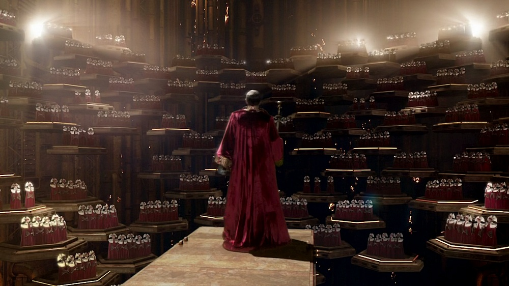
The Time Lord Intelligentsia
THE PARLIAMENT The Ruling Houses, the College of Cardinals
Any
Time Lord can declare himself to be a candidate for the Parliament, but
membership is only conferred by petition of 1/3 of the Time Lord
community. Only the most well respected will be able to gain such support. The Cardinals generally serve until retirement, but they can be removed by the Lord President or by a 1/3 vote of the Time Lord community.
The Surgeon-General is a member of the Parliament, as
are the Chapter Cardinals (who lead the Chapters), Under-Cardinals (who
sometimes act as department heads for research groups), Junior Cardinals, the High Gold Usher, Inquisitors and other Senators. Also included are the Inquisitors who make up the Supreme
Court of the Guardians of Gallifreyan Law. Most of the time the current President's Chapter will be the most well represented Chapter on the Council. The
Parliament is only convened when issues of great import are to be
discussed and decided (such as the passing of laws and amendments to
the Constitution). Most of the time
the High Council handles matters.The High
Gold Usher decides who can speak at meetings of Parliament. The more important a member, is the closer
to the ground level of the council chamber they will be seated. High-benchers
are consider to be insignificant. One of the duties of the Cardinals is organizing Resignation Day ceremonies.The
Parliament appoints 19 of the members of the High Council from its own
ranks. The most experienced of the Parliament are generally chosen to
become Prime (or High) Cardinals on the council, but they must step down from Parliament to take up that new position. The combined mental powers of these Time Lords allow them to take mental control of any Time Lord (even ex-presidents).
The Citadel's Cardinal’s Habitation Complex holds the living quarters for the Cardinals. Most Junior Cardinals teach at the Academy as well as pursue advanced research projects. All of them are still considered to be scientists and they continue to spend millennia working on their individual research
projects.
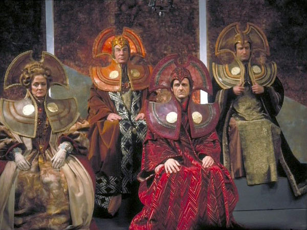
Time Lords and Ladies of the
Scendeles(?), Prydonian, Patrexes,
and Arcalian Chapters
THE CHAPTERS OF THE TIME LORDS
Gallifreyan society is organized into six Chapters or Colleges. These Chapters are politico-economic factions (or clans), each of which is led by their own Council of Cardinals. Every Chapter is represented on the High Council by at least one Cardinal Prime. The six chapters are based on the six founders of Gallifrey: Rassilon (Prydon), Apeiron (a warrior), Omega, the Other,
Pandak the First (the second President) and Professor Artron (or perhaps Lord Patrex, there is much debate among Time Lords as to the accuracy of this list).Each chapter's Council of Cardinals meet in its Chapterhouse. The Chapterhouses are also known by color, so Prydon is sometimes called the Scarlet Chapterhouse, and Arcal the Green
Chapterhouse.The Prydonian Chapter House has a statue of an Owl (the symbol of Rassilon) outside its entrance.
Each Chapter has their own Academy. Most of the members of each chapter embody certain traits. A Gallifreyan's initial chapter is chosen based on their personality and talents at age 8.
Upon graduation from an Academy a Gallifrey is given the opportunity to change their Chapter.
But afterwards Gallifreyan customs forbid a person changing allegiances to another Chapter. Each Chapter has 100 full Time Lords for a total of 600. Their are also about 400 Apprentice and Junior
Grade Time
Lords at any given time. Each Chapter has a Chapterhouse. The chapters
that are not represented by the current Head of the Presidency are
considered to be independent, and their Lords are often know as
Independents. Time Lords can give their words as either a Time Lord or as a Prydonian. Such oaths are taken very seriously. It is traditional for Gallifreyans who change their chapter at graduation, to continue to wear the original colors of
their academy.
It should be noted that plebeians (non-Time Lord) are not bound by the color coding of the chapters with respect to
dress. Gallifreyans who become Investigators for the CIA lose all rank and connection to their colleges.Black and white robes appear to indicate Gallifreyans who are not currently aliened with a particular Chapter. Black appears to indicate an allegiance to no chapter while white might indicate allegiance to all chapters. Jesters on Gallifrey wear multicolored clothes (perhaps this indicates confusion?)
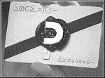
The Seal of the Prydonian Chapter
The Six Cardinal Colleges
Prydon Chapter: The Prydonians wear scarlet, orange, and gold.
Most have long sallow faces with beaked noses. They are known to be plotters, decision makers, and liars.
They also tend to be talented with learning other languages. This Chapter holds the most politically powerful
Houses and for this reason receives more advanced Rassilon Imprimaturs than the lower chapters. The Prydon Chapter has produced more Presidents then all the other Chapters combined. They have also produced more renegades then the other chapters. This Chapter was founded by Rassilon.
Arcal Chapter: Arcalians wear green
and brown robes. This is the second most powerful chapter and for this reason receives more advanced Rassilon Imprimaturs then the lower chapters. This faction was dedicated to science and
technical expertise, and holds many of Gallifrey foremost scientists and temporal engineers. There is an Arcalian Council for Temporal Research.
While they love to study it, most Arcalians dislike actually interacting with the outside universe, and rarely leave their TARDISes when off world.
Even on Gallifrey they tend to be quite solitary. Arcalians are known for always siding with the winning side of any political debate. This Chapter was probably founded by Omega.
Patrex Chapter: The Patrexes wear heliotrope and burgundy robes. The Patrexes are an order of artists, aesthetes,
librarians, and philosophers who see artistic value in everything (even pain and suffering).
Many of them have advanced telepathic abilities. They are know for the far away looks they carry on their faces, but most lack any true imagination. Adventure does not come easily to members of the Patrexes Chapter. This chapter struggled to maintain its quota of 100 full Time Lords and is
a minor player in Time Lord politics. The Patrexian Numbers serve as a
numerical base to everything they create. They are know for obsessively
cataloging everything. The few Patrexes who do rise to the first rank
(such as the rich and powerful Tebediatroculozan) are well respected for their mental prowess. One of the duties
of the Patrexes might scanning into the future as far as was possible. Space-Traffic Control is considered to be a good job for Patrexes who long to learn about life outside of Gallifrey. Practically everything they create is beautiful
but pointless. This Chapter was founded by Lord Patrex.
Cerulean Chapter: Their colors are a subdued
light blueand they have little political power. Probably Green in policy. This chapter is made of either academicians or bureaucrats.
Drome Chapter: The Dromeian colors are probably silver-gray and they have little political power.Probably similar to Social Democrats. This chapter is made of either academicians or bureaucrats.
Scendeles Chapter: Their colors are quite subdued - probably light yellow - and they have little political power. This chapter is made of either academicians or bureaucrats.
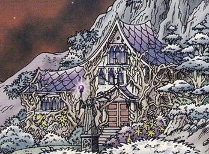
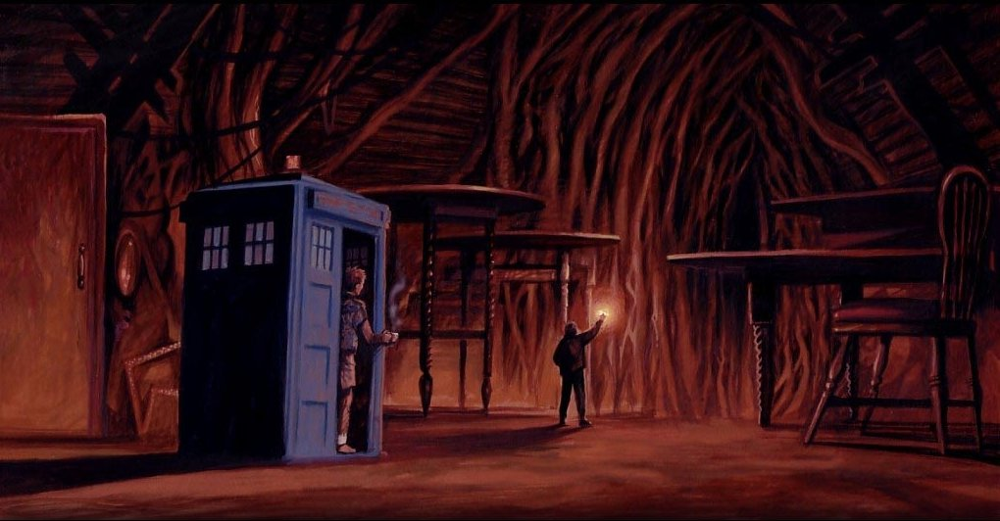
Exterior and
Interior of a Great House
RASSILON'S GREAT HOUSES
Every Gallifreyan is born into one of Rassilon’s Houses. Each Gallifreyan begins life as a cousin of their House. The family of each House is lead by its Kithriarch. Kithriarchs
are usualy appointed by the previous Kithriarch before their final
death day. Every house is also registered under a specific chapter – though its cousins are not bound by this. This
designation might be chosen by the house’s Kithriarch, but could also
be based on which chapter the majority of that house’s cousins are
members of.Under the Worshipful and Ancient Law of Gallifrey, a member of any House can give up the protection of their House and
become the Kithriarch of a new House with a new Chapterhouse and Loom. The founder of a new House carries the title
Grandfather. A Renegade Time Lord traditionally renounces his name and his house. The
physical houses are cryptoformed.They start as seedlings and it take several years for a houskeeper to grown a House. They might be grown from priory wood. They are the oldest living things on the planet. Each house has a low-level sentience - even as a seedling. The connection between a House and its Family can
sometimes become frighteningly possessive. Their roots extend deep into the ground beneath them. The interior of a House and its furniture are designed to a massive
scale to give newly loomed Gallifreyans a chance to feel like childrene.
The artificially animated furniture needs to be house trained,
otherwise it will tend to chase people around. The paintings whisper at
passing cousins. The Drudges
are massive automated humanoid servants who can be found throughout the
house. They answer to the Housekeeper, but serve both the cousins of
the house and the house itself. Each one
is composed of a basic servitor eidolon surrounded by non-living
syncretic matter that appears to be varnished wood. Some Time Lords
were know to take Drudges with them in their TARDIS to serve them when
they were off-world.
Each House
has a loomshed which holds its loom. The Honorable Central Population Directory defines the quota of cousins alowed for each
House's loom. This loom has a unique genetic core to loom its cousins. This creates a template that standardizes the
abilities
and blood of everyone loomling of that family. In the pre-Time War era there are between 3 and 9 million Gallifreyans. The
Keeper of the Rolls is the Time Lord responsible for keeping track of
all the members of all the Houses since the beginning of recorded
history. There are well over 18 houses recorded in the Cadaster of Rassilon. Each House has a Housekeeper who's is bonded/married to
their house. This is accomplished by taking the vow "I shall serve you might and main, mortar and mortice. I shall guard your bounds, your chattels and your progeny from Loom to Tomb."
and receiving a wooden ring to wear. This ring will burn to ash if the
Housekeeper loses the trust of their house. The Housekeeper
is responsible for maintaining the house and its wooded Drudges.
They can use the mirrors of the house to see into any room.
OLDBLOOD HOUSES
The Oldblood Houses are the Founding Houses plus the houses created at the beginning of the Time of Legend by Rassilon
right after the Intuitive Revolution. The eyes of the Older House are flecked with purple.
Old Times: Founding Exo Houses
The Founding Exo Houses are the houses that date all the way back to the Dark Times (before the Time Lords). Of the many of these Houses that once existed only five
or six still exist in the modern era. The ones that died out might
still be found in the fictional writings of beings throughout the
Universe. Cousins of these Houses command significantly more
respect than members of later ones.
House of Blyledge: The House of Blyledge was ancient even before the time of Rassilon. Blyledge is one of
the senior houses in the Prydon Chapter of Glorious Gallifrey. The House of Blyledge is an angular small dark building
that is older than the hill it sits on. It has a walled garden of silver trees in its center and is within visual
sight of the Capitol. Family members often wear blue clothes and thus the House might be a member of the the Cerulean Chapter. Amnoni Distuyssor Lorizhon and Patience came from this House.
House of Firebrand: One of the Houses that pre-dated the Rassilon. It is located on or near Mt. Cadon (so approximately 900 miles to the south-west of the Capitol). This
house is probably extinct in the modern era.
House of Rassilon (originally Fordfarding): Probably the oldest houses that survived the Intuitive Revolution. Rassilon’s House has gardens with trimmed hedges and gravelled driveways. It isn't far from the Capitol. Quennesander Olyesti Pekkary,
Olyes Dryanasor, Dryana Shylvarsor, Shylvar Karyesti, and Rassilon came from this house. By the time of the Doctor this house still had several cousins, but Susan is the last known womb-born decendent.
House of Goodlight: One of the Houses that pre-dated the Rassilon. It is not near Mt. Cadon. This house is
probably extinct in the modern era.
House of Heartshaven: The House of Heartshaven pre-dates
the House of Rassilon. It is located on or near Mt. Cadon (so approximately 900
miles to the south-west of the Capitol). Hartshaven has a vineyard and
makes Hartshaven Wine – which is considered some of the finest wine on
Gallifrey. For
this reason the House has a very well stocked and heavily reinforced
wine cellar. The newblood House of Dvora was probably spawned out of
House Heartshaven. Cousins include: Romanadvoratrelundar.
House of Jadedreamers: One of the Houses that predates the Intuitive Revolution. Some of its family were
members of the Sisterhood of Karn.
House of Lineacrux: The least active of the Founding Houses, known only for their expertise in Gallifreyan
history and laws. All of its cousins have the appearance of extremely old and senile Gallifreyans who passively
observe society around them. The truth of the matter is that the Lineacrux cousins are some of the most powerful
and influential members of Gallifreyan society. Their decrepit appearance is merely an act designed to lull others
into ignoring them. They observe and (when consulted) offer their opinion in almost all gatherings of Gallifreyan
society.
House of Lungbarrow: This Oldblood House was
reformed by the Other in response to the curse
and thus is arguably one of the original five or six Founding Houses from the time of Rassilon. The crest
of Lungbarrow is two silver leafed trees whose branches reach over and intertwine. 45 cousins are allotted to the
house of Lungbarrow.
By the time of the Doctor, records will indicate that the Omega was an ancestor of the House of Lungbarrow, but
the House tends to produce Prydonians. While still considered to be a
house of wealth and privilege, in the last several thousand years it
has fallen from favor, with its highest-ranking member holding a title
of Ordinal General. About 350 years after the looming of the Doctor,
the House was deleted from History for exceed its Loom Quota. It was
reinstated 673 years later. The actual
Chapterhouse is located in the southern gallifrey mountain ranges, over 900 miles to the south-west of the Capitol and about two days walk from Rassilon's Rampart (so about 80 miles). does overlooks the river Cadonflood. A forest of silver leafed trees stretch from the House to the river Cadonflood
at the base of the valley.
The House is perched halfway up Mount Lung (more formally known as Mount Cadon) on the west side. For the most part no Family members come to
the House of Lungbarrow, except for loomings and tombings.
A hired hermit lived behind the house. The river right next to the Hermit's home floods frequently
(this might be Cadonflood?). Southern Gallifrey is considered quite wild and beautiful, but does occasionally
suffer blizzards. There is a cellar full of Draconian Wine in the chapterhouse. The house was removed from the official
directory and buried around the time that the Doctor met Susan. The
house was destroyed shortly before the Doctor's regeneration into his
8th incarnation. Many of the surviving cousins ended up being recruited by Faction Paradox. A partial list of the Lungbarrow Cousins:
Omega
Almund
Arkhew
Bob? (possibly the 17th cousin loomed after Satthralope?)
Celesia
Chovor (the Various)
DeRoosifa
The Doctor
Farg
Glospinninymortheras (Cellular Eugenics specialist and possibly CIA)
Innocet
Irving Braxiatel (claims to be the Doctor's Brother)
Jobiska
Luton
Mable (the Doctor's aunt)
Maljamin
Owis (was the Doctor's Replacment after he was disinherited)
Quencessetianobayolocaturgrathadeyyilungbarrowmas (Ordinal-General to the President and 422nd Kithriarch)
Rynde (Epicural Overseer)
Salpash
Satthralope (Housekeeper of Chapterhouse Lungbarrow)
Tulgel
House of Neutronides: This
house survived the revolution and was recorded in the Cadaster of
Rassilon. Their cousins prided themselves on speaking Old High
Gallifreyan. The estates of the house were used for the raising of
Gallifreyan Cows. They have ancient debts to the Time Lords.
House of Warpsmith: One of the Houses that pre-dated the Rassilon. It is not near Mt. Cadon. This house is
probably extinct in the modern era.
House of Arpexia: The
cousins of this house tend to have hipersensitive traits like night
vision, enhanced sensitive magnetosense, and hallucinatory hysterics.
The cousins of this house are Gallifrey’s only scientific
fundamentalists. They place great faith reason and logic as the
solution to all problems and shun emotion. They have been conducting
research for research’s sake for millions of years. This house was
responsible for the unstable Babels. They’ve produced many experimental
Time Travel Capsules over the eons, but their technology tends to be
over complicated.
House of Artronides: This house was almost certainly a house founded by Lord Artron during the Time of Legend. By the modern era many some of its cousins served as officers in the Chancellery Guard.
House Avarna
House of Bluewood: A relatively minor house. It was sometimes represented by K-9 in negotiations with other Time Lords.
House of Brightshore: House
know for their political power, wealth, and sense of supercilious
entitlement, but not the intellect of its cousins. It produces a
lot of Prydonians. President Liviacaralis is a cousin of this house.
House of Dellatrovellas: One of the oldest and most powerful Houses. Time Lady Serenadellatrovella was a cousin
of this house. Tebediatroculozan was probably from it as well.
House of Dooclare: A
house that Lord Brolin was part of that took in Susan as Lady Larn
Findooclare. The house might have also taken in the Doctor after
he wassemantectomedfrom the House of Lungbarrow.
House of Duskeriall: Gothaparduskerialldrapolatkh was a cousin of this house.
House Gashani
House of Hellfrost: A
house dating back to the Time of Legend, Hellfrost secretly supported
the Cult of Morbius during the Civil War. The family continued to
privately revere Morbius down through the generations and even into the
Last Great Time War.
House of Jurisprudence: Inquisitor Darkelatraquistahastrad (aka Darkel) is a cousin of this house.
House of Meddhoran: Like most houses, all of this house's cousins have their house name imbeded in their full name.
House of Mirraflex: A minor oldblood House that produced most of Gallifrey’s generals, enforcers, and
strategists. Its cousins are known for being aggressive and ruthless defenders of the Laws of Time. They have nothing
but disdain for the Lesser Species and are know for their sense of supercilious entitlement. Their
Loom was known for being particularly versatile. Most of their cousins
do not trust members of New Blood Houses, especially Xianthellipse. The
House was founded by General Mirraflex after the beginning of the
Eternal Wars, who structured it as an esoteric martial lodge.
House of Nechronmancy: Nechronmancers don’t believe in the passage of time and don’t acknowledge
their gender or their names. They’ve deleted most of the records of their House and are viewed as pariahs among
Time Lord society. They are capable altering time states in ways that would be impossible for any other Time Lord.
During the War these deep engineers collected Highest Entropy Matter (HEM) from dead time states (where the universe
had reached thermal equilibrium and history/time has ceased to flow).
House of Scarlet: Almost certainly a House associated with the Prydon Chapter.
House of Stillhaven: A
House associated with the Prydon Chapter. During the Last Great
Time War the patriarch of this house opposed the Ultimate
Sanction. As punishment the cousins of this house had their
memories erased and were used in experiments.
House of Wetrix
House of Wherewithal:A
decrepit old House in the mountains of Southern Gallifrey that had
hundreds of stories. This house had no interest in Gallifreyan
traditions. Most of the cousins are female, including Baba, and the three headed hydra-creature Faith, Hope, Susan. Lilith (aka
Iris Wildthyme) was adopted
into this house.
NEWBLOOD HOUSES
There are very few Newblood houses (relative to the number of Oldblood Houses) and their cousins tend to be quite eccentric.
Unlike the Oldbloods, most of their cousins have the ability to precisely control their regenerations. All of them
were founded no more than 10,000 years before the Doctor was loomed.
House of Dvora (aka House of Devouring Hounds): The first of the
Newblood houses, House of Dvora was created 10,000 years before the looming of the Doctor.
Its Grandfather was probably from the House of Heartshaven. Their Cousins view themselves as destined to publicly
lead and control. Dvora
is the only Newblood House whose power equals the Five Founding Houses.
They are ruthlessly practical and open to using violent methods, but
strive to appear impersonal and passionless. They have seven elite
operatives who undertake secret missions for them. Originally associated with the Patrex chapter they later allied with the Prydonians. Cousins include:
Morbius the Imperator
Ruathadvorophrenaltid is probably a cousin of this house.
Romanadvoratrelundar of the House of Heartshaven, is the inheritor of the House of Dvora.
House of Lolita: A
house founded by the 101-form timeship Lolita during the early years of
the Time War. Its founding grandmother was destroyed less then a
century into the War, but she had at least two children before this
happened.
House of Oakdown: This Newblood House of Oakdown is
allied with the Prydon Chapter and is one of the most respected and noble Houses on Gallifrey.
This House produced the Master and the Master's Father
(almost certainly Marnal the Crusader). Its estates were located on Mount Perdition, less then a two day walk from Mount Solace (so less then 80 miles). The hillsides were covered
in fields of red grass.
House of Paradox: This House was founded by a cousin of Lungbarrow and conducted illegal experiments on Non-Linear Time. The
Grandfather also begins to experiment with lesser species reproductive methods and begins wearing armor made of the
bones of Yssgaroth infected Time Lords. It was reformed into Faction Paradox and exiled from Gallif0rey.
House of Tracolix: A minor Newblood House that is known for subtly trying to exploit every change that occurs
in Gallifreyan society. They are arrogant, reckless, and ambitious. Their willingness to follow any passing fashion
gives their cousins more versatility then those of other Houses.
House of Xianthellipse: A minor Newblood House known for its understanding of biology and biodata.
Its cousins appear to view the Prydon Chapter with disdain for they never wear scarlet.
SERVITOR AND CARETAKER HOUSES
Below the Time Lords are the Plebeian Classes (non Time Lord). This ancillary staff and their families live in the rest
of the Capitol. They are Watch guards, technicians, artisans, cleaners, engineers, cooks, and musicians. MidTown is between the Capitol and LowTown. Low Town is the society of poor that has formed in the foundations of the
Capitol. The Low Towners call Time Lords Timeys while the Gallifreyan elite refer to
New Age Time Lord dropouts who live in Low Town as Shobogans. The Shobogans are know for being trouble makers and vandals. They have their own form of writing, and often inscribe the words 'Bad Wolf' on walls and pavements. Their Houses are ruled by a Castellan (or Chatelaine if the Gallifreyan is female). During the pre-War era there are between 3 and 9 million Gallifreyans. But the Pythia's Curse fades shortly before the
Time War starts, allowing natural reproduction to occur. The population reached billions, andby the end of the Time War there were approximately 2,470,000,000 children on Gallifrey.
House of Catherion: A
now extinct House whose chapterhouse is looked after by a caretaker
line. In the War era the chapterhouse's great hall is known as the Hall
of Faces because the cousins were killed by a rogue Babel.
House of Everston: Romanadvoratrelundar is custodian of this House.
House of Ixion: This
House is located on the southern edge of the civilized portion of
Gallifrey, and just north of the southern mountain range. Indeed, it is
the southern-most House on Gallifrey. Its original Family left
during the first Diaspora leaving only a
line of caretakers to watch after the House. Millions of years later
Morbius chose it as the Headquarters for the Order of the Weal and made
one of the caretakers, Chatelaine Thessalia, head of the organization.
Its “cousins” were malcontents from larger Houses who were combat
trained. Despite this training most of their duties were
administrative. They Loom of Ixion was never used but rumor has it that
they tampered with other House’s Looms to produced mutants and
renegades.
House of Deeptreeredlooms:The Prydon affiliated Newblood House of Redlooms
is a servitor-class houses that has been producing military ordinals (who serve in the
Prydonian Watch) for a very long time. It is a family of loyal mavericks who have defeated a dozen Time Lord traitors. The cousins of this house often tell loomlings
stories about vampires.
House of Neutronide: A lesser house located in the Drylands outside the Capitol. Know for farming Morning Star κοως.
House of Shadow: There
are rumors and heresies of the existence of a Shadow House which hold
Gallifreyans whose regenerations have failed in some way. These
included regenerations that had only regenerated half of the body,
regenerations where the body was changed but not the brain,
regenerations that turned the subject inside out, regenerations that
reverted the Gallifreyan into a time-tot and other monstrous
variations. Also within this house the Black Nurseries hold mutated and
paradoxical childrene (including those who over 20 years old). The
advances in Gallifreyan science over the last several thousand years
have almost completely eliminated such problems, and there is no
evidence that the Shadow House ever existed. However the Doctor felt
that that it almost certainly existed in the past (and possibly in the
present before history was changed to remove it). If the Shadow House
did exist the the Valeyard was probably one of its cousins.
House of Urquineath: The
maven house of inconsequence and holder of naught. Antigone and
the Hussar were cousins of this House. All of its cousins had
purple-flecked eyes. Hussar lost all of the house's holdings through
gambling around the time House Paradox was founded. House
Urquineath was extinct by the time of the Last
Great Time War in Heaven.
The Watcher Milady
THE DEPARTMENT OF THE WATCHERS
The Time Lords are pledged to uphold the Laws of Time.
As part of this, Rassilon decreed that the people of Gallifrey must
defend their manifest destiny to govern universal history. One
of the first steps the Time Lords took, after realizing how dangerous
it
could be if other worlds invented time travel, was to create the
Department of the Watchers. The department was tasked with sending its
Watchers into the field to try spot any dangerous time travel. Chapter 9 was tasked with monitoring and confronting other species that threatened to break the laws of time. However
it is very rare for a Watcher to be authorized to interfere. The
Department of the Watchers used to have a seal that was an image of a
Watcher gazing out over a stunning land (or space) scape. The exact
nature of the view varied from depiction to depiction.
Watchers aren’t technically (Senior?) Time Lords (are their TARDISes technically loaners?). But they have graduated from the Time
Academy. Originally Watchers had to be strictly celibate. But, by the
time of the modern era, this rule had been relaxed to allow short
affairs. Every Watcher answers to the Advisor of the Department of the
Watchers, who can be found at the HQ on the foggy side of Gallifrey.
However all intervensions must be approved by Control. For the majority
of the time, Watchers simply travel the cosmos observing and recording.
They have access to the most advanced TARDISes availible. A Watcher’s
TARDIS can remotely tap into some restricted governmental computer
records on the worlds it visits. Only once every few centuries, when
timelyness is vital, will Control even contact a Watcher.
Watchers
have access to state-of-the-art TARDISes. The constables have the right
to take control and even to nullify any stolen TARDIS (and its
operator), if they don’t surrender. Control Orders have been issued by
Chapter 9 for all stolen TARDISes. This, combined with their enhanced
symbiotic prints, allow them to override a thief’s control of a stolen
TARDIS simply by being inside its control room.
At
the time the Department was created, Gallifrey’s ability to remotely
monitor temporal activity in the rest of the cosmos is quite limited.
But as Gallifrey abbility to scan the universe increases, the
usefulness of the Department will decrease. The budget was cut for the
Watchers working in the field. Most Watchers now travel alone with no
other crewmembers in their TARDISes. In the modern era, there few remaining
Watchers and the
Department is considered to be merely ceramonial. Many argued that
the organization was no longer nessecary.
THE ORDER OF THE WEAL
Organization
founded by President Morbius and based at House Ixion. It was tasked to
ensure Gallifreyan culture survived, but tended to be radically
proactive in carrying out this goal. It viewed all historical records
as suspect and trusted only what they could directly sense and
comprehend. The Order was led by Chatelaine Thessalia, had about 170
members and access to 4 TARDISes. Its members were malcontents from
larger Houses who were combat trained by the Order. Despite this
training, most of their duties were administrative. Their elite guard wear
black and gold instead of the usual red. The CIA eventually assumed all
the responsibilities of the Order.
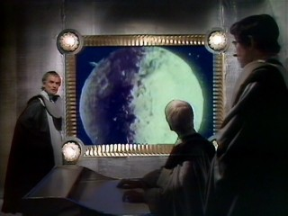
Lord
Ferain of the CIA and their Headquarters
THE CELESTIAL INTERVENTION AGENCY
The CIA, the House of Celestial, the Celestials
The Special Executive
Old Times: The Special Executive & the Celestial Intelligence Agency
Shortly after the Intuitive Revelation, Rassilon and the Other (and probably Tecteun) began trying to loom new Gallifreyans. Their first experiments produce a wide range of exotic beings with amazing powers. The prototypes of these early trials become known as the Special Executive or the Bastards of Rassilon. It’s possible they started out looking similar to Shobogans but theirbiodata
kept being contaminated and adapting with each regeneration - mutating
them more and more. This was a common problem with early regenerative
biogenic molecules and could explain the Executive’s eventual exotic appearance. The Special Executive formed the first parahuman brigade and they served as Rassilon's personal agents, and assassins.
During
the war with the Great Vampires the Gallifreyans prepared fleets of
Bowship capable of destroying the giant creatures. At the same time the
Celestial Intelligence Agency was created to track down every Great
Vampire in the cosmos. This CIA was formed and led by Rassilon’s personal guards and agents(known as the Garda in some records).The Celestial Intelligence Agency was probably founded by Rassilon’s Special Executive. But new agents were
quickly and secretly recruited from all of the Academies and trained in
espionage. A massive, self-sustaining, network of spies was created. The Timeless Child appears to have been recruited and served as a Constable for this secret agency.
While
the Intelligence Agency was very effective in tracking down nearly every active Great
One, Rassilon eventually came to consider the power of this growing
organization to be a problem he should deal with at some point.
A few decades after the loss of Omega,the loom-born Gallifreyans rebeled against the womb-born Shobogans killing almost all of them.
Rassilon takes this opportunity to send loom-born assassins to kill
the Special Executive. The Executive sides with the Shobogans during
the riot, then leaves Gallifrey. They become interdimensional and
transtemporal mercenaries. After many other adventures, they eventually
end up working for the human Sabbath.
In response to the (apparent) self-destruction of
the Minyians homeworld, the first and most important of the Laws of
Time was amended to included the Doctrine of Non-Intervention. From
this point forward the Time Lords would observe the Universe but never
interfere. This policy change had large scale support among the Gallifreyans and Rassilon is remembered as being a major proponent for this philosophy.
However, Rassilon decreed that the people of Gallifrey must defend their manifest destiny to govern Universal History. The Celestial Intelligence Agency was reformed into the Celestial Intervention Agency (CIA) in order, it was claimed, to deal with minor issues that most Time Lords would view as being beneath them. In
reality the CIA had secret divisions tasked with taking whatever action
was necessary to preserve the Time Lords' power and culture. The Division and the CIA collaborated on the intervension to send the Doctor to Skaro in ‘Genesis of the Daleks.’
Like the Watchers and
other interventionist organizations, the Celestial Intervention Agency
is responsible for protecting history and intervening when it was
deemed necessary. These interventionists carefully monitor other
species research into time travel and act to prevent unauthorized time
travel. While the Department of
the Watchers relied on field operatives, the Vortex Operations Unit on
Gallifrey was responsible for scanning the vortex for temporal
anomalies for the CIA.
They also defend indigenous lesser species from aggression from time active aliens. Rassilon gave them the authority to stop any threats to the future. The interventionists prefer conspiracy and manipulation to open confrontation.
Their motto is "They story changes, the ending remains the same." In
other words, you can do whatever you need to as long as recorded
history remains the same.
Unfortunately, the Time Lords are, in reality, a very xenophobic and
fearful people, and anything they don’t understand is perceived as a
threat to themselves. The CIA tended to over react to such things, often without bothering to consult the Time Lord Supreme Court. The CIA has been known to destroy all life on a temporal nexus world in order to prevent Matrix records, or other ancient artifacts of Rassilon, from falling into the hands of another species.
The official leaders of the Agency is a group known as the Tribunal (also
know as the Dark Council). The Tribunal is made up of the First Speaker
(also known as the Director or Chief Coordinator), the Second Speaker
(Deputy Coordinator) and the Third Speaker (Sub-Coordinator). The Chief
Coordinator of the CIA knows several secret codes which allow control
of the Transduction Barriers, the presidential files, and the contents
of time vaults (including the Omega Arsenal). While the Chief
Coordinator outranks the Castellan, the Lord President has final say on
matters of jurisdiction between the two.
Originally the interventionists reported directly to the High Council and was under their supervision, with the President being the nominal head of the CIA. Butthe Constitution was amended so that they reported directly to the Chancellor, so as to provide the President and the High Council with plausible deniability.In practice, the CIA's actions are only limited by the Chancellor and the Lord President.There are rumors that the CIA actually only answers to their own code. Unbeknownst
to even the Tribunal, the CIA is secretly manipulated and controlled by
the Matrix Lords (Rassilon, Morvane, and Bedevere) from within the
Matrix.
The CIA eventually grew to be a very powerful organization and
the most influential of the various interventionist movements. Its
political power was such that it was often nicknamed the House of
Celestial, and its agents were know as Celestials by the plebian classes.
It is rumored that two thirds of the High Council has been bribed or
blackmailed by the CIA (the Doctor believes it's more like half of them).Their
official influence reaches to the other time aware civilizations.
Article 57, Subsection 12 of the Shadow Proclamation is titled
“Jurisdiction of the Celestial Intervention Agency.” Viewing any
records classified by this subsection requires the approval of
Gallifrey’s Castellan.
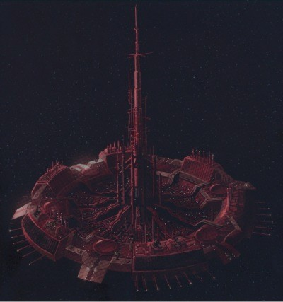
The CIA's Time Station ZenobiaIn theory, the Supreme Court was
responsible for judging non-Gallifreyan time active species or
individuals who had violated the Laws of Time.These
trials would be held on Gallifrey’s biggest off-world station, the
CIA's Time Station, Zenobia. But in practice, once the CIA decided to
imprison someone, not even the Lord President can overturn their
judgment.
It is standard CIA protocol that any member of a
lesser species who is transported through time and space by a Time Lord
should have their memory wiped and be returned to their native time
zone. It should be noted that Gallifreyan memory wiping techniques
aren't totally reliable and the memories will often reappear as dreams.
The
Oubliette of Eternity is a chamber found near the center of the
Zenobia. Subjects placed inside it would be dissipated from history
using D-mat technology. This removing all their biodata from history
creating a nearly identical universe where the target never existed.
This punishment was reserved for high treason against Gallifrey until
it was abolished (probably because it was a violation of the First Law
of Time). However the CIA kept using the Oubliette in secret to
get rid of Gallifreyans who were threatening to disrupt Time Lord
culture.
The CIA is obsessed with titles and positions. These
include Chief Coordinator (First Speaker / Director), Deputy
Coordinator (Second Speaker), Sub-Coordinator (Third Speaker),
Inquisitor, Investigator, Field Agent, Captain, Commander, Constable, Under-Assassin, Special Time-Space Troopers (ST-ST) and
Junior Monitor. The Vortex Operations Unit was responsible for scanning
the vortex for temporal anomalies. Chapter 9 was tasked with monitoring
and confronting other species that threatened to break the laws of
time. The
Allegiance Command Cell was another a branch of the CIA. The CIA
numbers its investigators; the higher the number the higher the rank of
the Investigator.
Their HQ is located in the Citadel Constraint Block and is sometimes referred to as Gallifrey Central. The CIA will enclose their labs in recursive time loops to hide them from Time Lord society. These
time locks are the usual way that the Time Lords keep something from
being seen or accessed by the other temporal powers. To ensure that
information is not intercepted, the CIA Co-ordinator will sometimes
input data and logs directly into the Matrix Databanks. To insure the
existence of back-up copies, top secret message sent from Gallifrey to
agents are routed through the TARDIS closest to the receiver (they are
of course encoded). In emergencies, they will teleport Secure Delivery Capsules (SDC)
to the current coordinates of the agent. These capsules are virtually
impossible to open if you are not the intended recipient.
Some agents are recruited from the Chancellery Guard. CIA Investigators loose all traditional rank and connections to their colleges when they join the agency.However their bio-data extract will never mention that they are affiliated with the CIA. Even
in the modern era it’s virtually impossible for most Gallifreyans (and
even Junior Time Lords) to learn anything about the Celestial
Intervention Agency beyond its name. There are only a few references to
their interventions in libraries.
CIA agents are known for being ruthless and determined, though they prefer conspiracy and manipulation to open confrontation. Their agents are trained in Smallest Effective Change Principles and are skilled in the arts of subterfuge. They don’t receive much instruction in diplomacy. CIA Agents in training practice their marksmanship on staser ranges, but are not given much training in hand-to-hand combat. Most of their time is spend studying and attending lectures about alien worlds, though they also are taught about many of Gallifrey's secrets from the past. Despite being against law,many agents celebrate being able to eat various foods
from the outside universe.
Most CIA field missions are performed by Apprentice Grade Time Lords who are generally between 100, and 1,200 years old. Field Agents tend to go through a life-span approximately every 150 years and there is no particular stigma about returning from a mission in a new body.
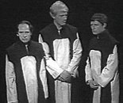
CIA Robes CIA robes are simpler than other governmental robes and usually either gray or black and/or white. Black and white robes appear to indicate Gallifreyans who are not currently aligned with a particular Chapter. When off world, CIA Field Agents traditionally wear black robes with tight black hoods. These
robes are equipped with Personal Camouflage Devices with a wardrobe
circuit that can make them appear to be wearing any of a complete wardrobe of outfits. This
perception filter can be overcome by people with psychic ability. The
CIA’s Special Time-Space Troopers wear elongated collars in addition to
the black robes and tight hoods. In
addition to the robes, they also have rings with perception filters
that can make them effectively invisible, or appear as a member of the
local time zone. The filters are strong enough to fool even other Time
Lords. Field agents are equipped with details histories, false
identification, documents of authority, Psychic Paper (a CIA
invention), and currency for various temporal nexus points. Like all
Time Lords in the field, they carry galactic compasses. CIA lock
burners a powerful enough to breach presidential security locks.
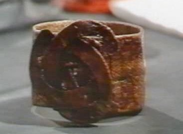
Time RingThe CIA was responsibe for most of the Time Lords’ research and development of new TT Capsules, including the Time Rings and Type 70 Military TARDIes. Most
CIA missions are undertaken with Time Rings. Indeed, due their easy
concealability, the CIA has more Time Rings than any other Time Lord
group. However, since unregistered TARDISes are much more difficult for
Gallifrey to monitor, the CIA always makes sure to have a few
unregistered TARDISes on hand. Most TARDISes used by the CIA's Field
Agents have enhanced Recall Circuits and remote self-destruct systems.If an agent is uncovered while in the field by the other temporal powers the
High Council will deny that the agent works for the CIA. When field
agents lose access to their own TARDIS in the field an Extraction
TARDIS is sent to pick them up. However agent who failed a mission is
likely to be exiled or sentenced to Shada. Control Orders have been issued by
Chapter 9 for all stolen TARDISes. They give a constable the right to take
control and even to nullify any stolen TARDIS (and its operator), if
they don’t surrender. CIA agents have enhanced symbiotic prints
that will allow them to override a thief’s control of a stolen TARDIS
simply by being inside its control room.
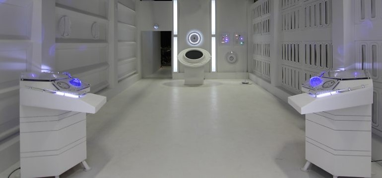
Extraction ChamberExtraction Chambers allow the Time Lords to
enter a single moment of time and remove any object or person they
want. Any such person/object will be time-looped into a fixed
point in time between one moment and the next until they are returned
to their time zone of origin.
Typical Time Lord weapons don’t need to be fired, instead they affect everything within a certain area. The CIA has been known to change
history by manipulating the genes of a race by having their agents
interbreed with various races. This is done to direct genetic drift
between one bio-system and another or to reduce their aggressiveness.
The Casts were invented as an expansion on the Patrexian N-Forms. The first prototype Time Sentinal, Pariah, was created by Rassilon using the Matrix and based on Cast technology.But
Pariah rebelled against Rassilon and killed thousands of Time Lords.
After a final battle, Pariah ended up crashing on the Earth. Rassilon then used the Matrix to create Pariah's successor, the Cast, Shayde.
Casts are sub-matter block-transfer drones used by the Time Lords
whenever violent physical action in the outside Universe is need. They
are usually mindless, but their intelligence can be raised to near
sentience. When active, the Casts feed on radiation from local
space-time anomalies. They could form a 0, 1, 2, or 3 dimensional
physical body to complete their mission, allowing
them to slip between dimensions like a specter or even turn themselves
into a shadow. Shayde can even reshape his body to appear humanoid.
Shayde can enter the vortex to teleport through space and time. While
in the vortex he can track beings and objects from one point in
space-time to another. They can launch psychic projectiles that can
destroy targets of varying sizes. Casts are remotely controlled from the Matrix on Gallifrey or a TARDIS.
If the control signal is broken the Cast will vanish until recreated.
With these new safeguards, Shayde was much more reliable and
successful. And the Casts end up becoming the accepted Time
Lord military force for millions of years. Casts are usually deployed
off world but are occasionally used on Gallifrey herself.
In extreme circumstances, Telepathic Thought Projection (TTP) is sometimes used to try to remotely override the will of members of lesser species to get them to act as the CIA wishes. Unfortunately
these telepathic commands can often be detected by other telepaths in
the area, and it usually pretty obvious that the controlled subject is
acting abnormally. For these reasons the TTP is rarely used for more than a few minutes. Preparations for a telepathic intervention are extensive and often require temporally suspending the targeted time zone in a time bubble while they are completed. While Time Lords are capable of moving and perceiving the bubble all others will be frozen in time. They even have the ability to freeze time on Gallifrey.
Seal of Division
“The Division does not exist. The Division does not have operatives. We are not even here.”
Division
Division is a ‘black ops’ organization that originated on Gallifrey. Division grew out of an
ancient Gallifreyan organization. The original organization’s purpose was to
ensure the safety of the Stellian Galaxy (aka the Milky Way Galaxy). This
ancient group is almost certainly the
Celestial Intelligence Agency
that was created to locate vampires throughout the Stellian Galaxy.
Sometime after the first Vampire War, the, now very powerful,
Intelligence Agency was re-formed as the Celestial Intervention Agency.While the interventionists are taught that the group was created by the Other,Tecteun and Solpado both were probably also involved in the creation and early operations of Division.It’s also possible that the Special Executive form the original nucleus of the CIA and/or Division. At the time of its founding, during the Time of Legend, the
group called itself the Division. As a division is an operating unit of
a larger organization, and the Division would appear to be a
self-contained major unit from a larger whole (probably the Celestial Intervention Agency) that is capable of independent action. But they still worked together on occasion. This division occurred after the Doctrine of Non-Intervention was created, because some Time Lords believed that the Doctrine would sometimes need to be broken.
The purpose of the Division is to intervene in History on the rare
occasions when it was deemed necessary. A single divided tree with
its branches spreading out became the seal of Division. (It might be significant that the seal of the House of Lungbarrow is two trees with their branches intertwined.) One
of the earliest actions taken by Division was the capture and
enslavement of the Gallifreyan God Time. This anchoring is what made
full access to space and time possible for the Time Lords. It was the
first of many scientific breakthroughs made by Division. In the
modern era, some Time Lords suspect that the interventionists might
have used the Eye of Harmony to retro-actively establish their
organization in Gallifrey’s past.
While the
CIA is an organization whose existence is known by even the plebian
Gallifreyans, the division of the secret Time Lord agency became
something whose very existence was unknown to all save the High Council.Division originally served for the glory of Gallifrey and answered to the High Council. For a time, the High Council could even classify information so highly that Division isn’t allowed to see it.But, as Division grew in the shadows, its leadership eventually saw itself as ‘outgrowing’ Time Lord society.
Division’s command structure is complex. Because all dead Gallifreyans have their mind stored in the Matrix, many Gallifreyans believe the Matrix secretly controls the Time Lords and feel that the dead have a greater effect on their life then the living. There are even rumors that the Matrix always existed and created the Gallifreyans just so that it would have a point of origin.
There is at least some truth to these rumors, as the Matrix secretly
manipulated events to ensure the various branches and divisions of CIA
would end up under the hidden control of the Matrix Lords.
Officially the President and the Keeper of the Matrix are the only Matrix Lords on Gallifrey.
But in reality some deceased Time Lords, and representatives of other
higher evolutionary species, serve as Matrix Lords inside a Sub-Matrix
under the command of Rassilon, Morvane, and Bedevere. While some
Matrix Lords, like Rassilon, exist only in the thought-space of the
Matrix, others, like Merlin, have corporeal existence. They have
the ability to enter and leave the Matrix on their own. The Matrix
Lords convene inside the Matrix only when a crisis threatens reality
itself. But in such times they have full control over the Celestial
Intervention Agency. This allows Division and the CIA to work together. For example Division and
the CIA collaborated on the intervension to send the Doctor to Skaro in
‘Genesis of the Daleks.’ But most of the timetemporary leaders of Division are appointed. Some of these hold the rank of Commander.
By
the modern and pre-war eras it would appear that even the Lord
President is unaware of existence of Division and most of the records
of Division in the Matrix had been redacted. The
Chief Coordinator of the CIA (aka the First Speaker) is oblivious to
the fact that the CIA is secretly manipulated and controlled by these
Matrix Lords.
The agency ensured order in the cosmos by make small interventions at the right points in space and time. Every
civilization was assessed to see if it was enlightened or it required
intervention to 'enlighten' it. Events were shaped and guided. Division prefers
conspiracy and manipulation to open confrontation. The Psy-Ops
(Psychological Operations) department oversees misdirection and
manipulation strategies. But some civilization required more overt
direction. Because of their powers, the interventionists believed that Time Lords could present themselves as Gods to the lesser species if required. This is known as a Class 2 Intervention.
As the Time Lords grew in power and reach, so too did the scope of Division. The organization became colossal,shaping events across space and time. In the beginning, Division performed intervention operations for the High Council – including ones involving mass destruction.
Eventually the interventionists came to believe that the Web of Time
should be adjusted whenever it suited the needs of the Time Lords. Division refocused its efforts on secretly controlling the universe.
Someone
(almost certainly Rassilon and the other Matrix Lords) created the
secret branches of the Events Library. These branches are hidden
throughout the universe, and they literally archive the events of those
regions. The Events Library is used by the Matrix Lords to exercise and
control the power of the Time Force. Combined with power of the Eye of Harmony, and the Matrix of Time, the
Events Library functions as a time manipulator. Each branch had a
Librarian (identified only by a number, just like the members of the
CIA). When wars or other events began to get out of hand, the Librarian
of that branch could re-combine the events to create a new
outcome. This allows the Events Library to limit and deescalate
conflicts by re-writing history. All such alterations are, of course, a
violation of the Laws of Time. Only the Key to Time surpasses the Prime Eye of Harmony in its ability to influence the Vortex and the Web of Time. The
existence of the Events Library is kept secret even from the Lord
Presidents of Gallifrey, and the Librarians report directly to
Rassilon's mind inside the Matrix.
The
longer the organization remained hidden, the more expansionist and
authoritarian it became eventually developing into a despotic regime.
They were willing control and manipulate and world or species. Division
agents committed many atrocities and cruelties that caused terrible
suffering. The scope of the organization was such that there were just
as many worlds devastated by Division as there were worlds saved by the
organization. Their agents considered themselves to
be forces of good and point to the scientific discoveries (that were presumably passed on to the Time Lords) as proof of this. Ironically,
the interventionists of the modern era believe that the organization's
form and function is exactly what the Other would have wanted it to be.
Division even tried (and failed) to limit the growth of the Daleks.
Time Lords can't formally apply to work in the Division. But many of those who became tired of the boring decadent life on Gallifrey slipped away to joining Division.
Over time the number of operatives needed increased massively. In order
to achieve its aims, Division recruits across all dimensions, and from
all sapient species. They even employed the Judoon and Weeping Angels on occasion. Potential recruits were tested.
Division has its own training academy which ruthlessly and rigorously trains its agents. Interventionists loose all traditional rank and connections to their colleges when they join the agency.While cruel, the academy was very effective at weaponizing any aspect of a recruit that they saw to be of use. Division operatives receive psychic-resistance training. Good Division agents aren’t supposed to question their orders, and most new recruits quickly lose any sense of morality. Despite
the organizations disregard for the First Law of Time, the Division
considers the meeting of multiple incarnations of the same Gallifreyan
to be an abomination.
Most interventionists enjoy their missions, with some describing them as "Murder, sex and adventure in exotic frocks."Despite being against law, many agents celebrate being able to eat various foods from across the cosmos. But, in the end, Division’s leadership viewed most, if not all, of its agents as mere tools to be used to achieve their aims.
In the beginning, the High Council appeared to be able to select which Division agent is assigned to one of their missions. But later squad composition were dictated by Division superiors.
Two agents and one TARDIS is considered a minimalist force, generally
only used for minor missions. Division agents usually receive their
briefings on Gallifrey, but more sensitive missions are assigned at
covert meetings on other worlds.
Division has Quantum Extraction Squads that can remove entire areas from time and space in order to isolate and extract their
target. Execution and banishment are both considered to be merciful
punishments by Division. They have much worse punishments, such as
erasure of identity or isolation prison terms for the duration of the
Universe. Division tries to avoid terminating Time Lords when possible.
Particularly
honorable and courageous agents for the Division are awarded a Service
Medal made of chronotelluric alloy. The strong entanglements of the
alloy makes the medal very trackable. They have funerals for their
agents, no matter the species. Retirement options for Division member are limited. Most remain with the interventionists until their death.
But some operatives do look forward to retiring from Division. After
retirement they sometimes get to keep their memories, but they are
forbidden from discussing Division with anyone – even other former
operatives. Division installs synaptic colliders in my brains of their
operatives (probably when they retire). If talk about any of their
activities with Division the collider injects poison directly into
their brain killing them in less than 3 seconds.
Division has a fleet of TARDISes which are capable of shelling planets. Gallifreyan portable temporal bombardment weapons package looks like 3 foot tall Genesis Arks. A Division TARDIS has a short range,
telepathically triggered, teleport that will retrieve the agent (and
anyone they are touching). They are equipped with a Chameleon Arch.
Division operatives also travel via some sort of teleportation system (possibly Time Rings?)
The
operatives are generally well armed and armored. Operatives usually
carry laser pistols and rifles which can disintegrate a target. Agents appear to be trained to carry multiple force knives. Some carry as many as seven. While in the field, many wear mesh body suit uniforms covered in strong armor plates. This armor doesn’t limit the agent’s movement. One of the rules of Division is that agents (even team leaders) can’t use equipment that they can’t ‘afford’ (aren’t qualified to use?)Many Agents carry handheld Perception Blockades that allow them to converse in public without being noticed or remembered. Operatives
are sometimes given temporal erasure equipment. Some are also known to
carry Reducer. Reducer slows down the flow of time for the surrounding
environment but keeps the user at normal speed. Reducer is
measured in nitros. 11 nitros lasts several minutes of relative
time. Because temporal hazing is a common condition suffered by
operatives in the field, they are often issued hypos of drugs that can
block the confusion about where and when they are.
Division’s
makes use of bio-data receptacles used by Chameleon Arches. These
receptacles store the subject’s bio-data, including their memories and
identity. All such receptacles look like watches or clocks of
some sort. It looks like a Chameleon Arch might be used in the Division
memory-wipe process. Like all uses of a Chameleon Arch, it is a very
painful process.
Seal of House Celestis
War Time: The Celestis
Using the Matrix, the Time Lords had learned that a great Time War was coming. A mere 35 years before
the start of this War, the Matrix indicated that this war was likely to
not only destroy the Time Lords but ensure that they never existed in
the first place. By this time Division’s
sphere of interest and study expanded to include the multiverses beyond
their own, and the void between those multiverses.Filled with fear for their own existence the interventionists of Gallifrey VIII (including the CIA) began to make plans to escape,both bytravelling to the void beyond the Universe,and by changing themselves into conceptual thought patterns.
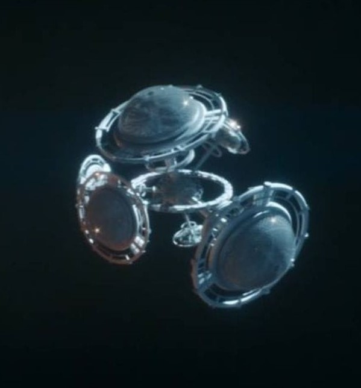
Division Control
The Celestial Intervention Agency of Gallifrey VIII, created
Mictlan, a cyst of galled space-time cut off from the rest of the
Universe and its time winds. It was constructed of block transfer
engines and computational matrices using Flux Theory and the same sorts of technology used to sustain the Land of Fiction.
Long before the end of the Time War, Division created a control station
outside of the universe of space and time. The dimensional engineering
necessary to build this void station is incredible even by the
standards of modern Time Lords. It likely required Rassilon’s secret science from the Time of Legend. The station is known as both Division Control and as the Vinculum.
The big discs on the outside of Division are possibly the transport pads that provide the compression necessary to shift the station through the void. Division
Control contains several bio-domes. It’s interior has metal wall with
cavernous cathedral like ceilings. Flowing water with trees smaller plants can be found throughout the structure. There
is a castle at the center of Mictlan is a structure sometimes known as
the castle. Its top level is made up of the Grand Hall of the Celestis
where the Lords Celestial can observe the rest of their universe of
origin through an space-time aperture.
After sixteen years of study and preparation, the interventionists were ready to put their plans into action. Division has its own training academy that served as the primary recruiting source for the interventionists. This academy withdraws from the Academic Roster. A few days after that the Interventionists (including the Celestial Intervention Agency of Gallifrey VII) erases themselves from history.
This is done using the same ‘force paradox’ technique as Grandfather
Paradox, and it is possible that they enlisted the aid of one of the
Godfathers, or Lieutenants of Faction Paradox. As
conceptual entities, they can’t be seen by most sapients. At best
they appear as a glimpse of shadow or the sound of robes rustling.
Since they are ideas they are nearly impossible to kill. Having become
conceptual thought patterns, they escape to Mictlan. This removal also physically removes the interventionist Academy.
Once in Mictlan, they rename themselves the Celestial House or the Celestis and set up the Last Parliament. The
non-interventionist students and faculty from the Academy are probably
used by the Celestis to create the first conceptual entities.
The
Interventionists effectively erased themselves from history when they
left the Universe. However the Braxiatel intervention changed history,
making Romana the Coordinator of the CIA on Gallifrey I. Thus the
organization wouldn’t have defected. The Celestis was, of course,
immune to such temporal interference, and would continue to exist even
if its point of origin was removed.
While
the Matrix would be able to remember the interventionists, most Time
Lords would forget that these interventionists ever existed. Only those Time Lords with access to the Matrix, and those with deep time memory abilities,would be able to remember them.This could explain why the 13th Doctor initially knows nothing about Division, and why she had such a difficult time tracking down information on the organization.
Division had become the antithesis of Time Lord culture. While the Celestis views themselves as raw and terrible gods of war, the
Time Lords view the Celestis as criminals and traitors. Time Lords who
encounter the Celestis Investigators usually flee in terror or end up
dead.
The Lords Celestial carried elaborate titles
such as the Lord of the Smoking Mirror and the Duke of Knives. They
organize themselves into 99 houses. To give themselves some structure
the Celestis obsesses about creating and following rules and contracts.
Agreements are always honored to the letter (if not in spirit). They
have incredibly complicated protocols and rituals that must be observed
at all times.
As the War began the Celestis struggled to decide whether to support the Time Lords or not. One
of their many rules prevent the Celestis from learning how the Time War
ends – even though, from outside of the Universe, such knowledge is
within their reach. The Doctor agreed to give the Celestis his
body after he has died if they promised not directly interfere with the
Time Lords on Drornid or later in the War. The Doctor also forced them
to agree to several other stipulations as part of this deal. The
Celestis agrees to the because it will allow them to claim the exotic
biodata that the Doctor’s unique origin and past have given him. Division saw the Doctor as being vital to the survival of the Universe.
The
Celestis’ investigators are known as Archons and assigned numbers. The
lower the number the higher the rank. The first investigators were
created using CIA agents who had been kidnapped from Gallifrey. The
Investigation Section began breeding these detective-assassin using crèches. They were primed for total obedience to their masters.
While they usually appeared as humanoid shaped gaps in History their
multidimensional nature allowed them to take on any form. They could
move through multiple dimensions of space and time using
mimetically-implanted aperture technology. The
Archons tended to be extremely violent – so much so that more of them
were killed by colleagues or the Lords Celestis then in field
operations. To prevent these burnouts they were subjected to forced
personality reboots. There are over 400 Archons.
Over time the number of operatives Division needed increased massively. The Celestis use their Mark of Indenture biodata tags to recruit numerous lesser species to worship them. In
order to achieve its aims, Division recruits across all dimensions, and
from all sapient species. Celestis agents could be found among all
factions in the War. They even employed the Judoon and Weeping Angels
on occasion.
These prospective
agents are generally granted boons in return for their consent to such
marking. The Mark insures that, upon their death, the being’s
body and mind will become fully enslaved to the Lords Celestial.
While their minds are transferred to Mictlan, the bodies can be
reanimated to serve as well. Sometimes the germ-plasma of these bodies
is used to create physical bodies for their Investigators. Conversion
plate badges were required to allow corporeal Division operatives (and
other sapient beings) to exist in outside the known universe. If the
plate is removed, the subject is pulled back into the Universe.
The Division can guide this return sending the operative anywhere in
space or time. Division Control functioned as the command centre from
which all Division operatives were directed.
While officially neutral, some of the Lords Celestials did offer some assistance to the Time Lord in the early days of the War. But
the Celestis discovered that, as a species of ideas, the lack of
imagination seen in the rest of the Time Lords was boring. Many were
much more interested in the creativity of their enemies. Politically,
the Celestis spent much of the War equally split between remaining
neutral, supporting the Time Lords, and supporting the Time Lords’
enemies in the War. By the time the Doctor’s body was re-discovered,
several members of the Celestis had begun allying themselves with the
Time Lords’ enemies are provide them with technology.
After
being banished by the Celestis, Investigator Four realized that Mictlan
would attract the Swimmers that exist outside of our Universe. The
Swimmers would destroy the entire Universe. At this same relative
time one of the 99 Houses of the Celestis goes missing and none of the
Lords can remember anything about it. Celestis Hypernauts One and Two
are dispatched to investigate. To prevent this the Investigator makes a
plan with Investigator One to release the Fendahl Predator to destroy
Mictlan and the rest of the Celestis. The Time
War Council, sends a infiltration team to acquire the Fendahl. They
plan to use it as a weapon against their enemies. Celestis Agent
One uses a time drill to releases the Fendahl Predator known as the
Memeovore. The Celestis world of Mictlan is destroyed by the
approaching Swimmer. While the disappearance of one of the
Celestis’ houses could have been an early effect of the Memeovore, it is also possible that the missing house was Division Control fleeing the impending destruction of Mictlan.
End of Time: The Flux
In the aftermath of the Time War, the Division Control Station continued to be located outside of the Universe. Division continued to judge events and entire civilizations according to their mandates and rules.
Its agents interfered in secret with the History of the Universe. Every
species, world, and historical moment was subtly shaped to Division’s
will. With the Time Lords of Gallifrey and the Daleks gone, Division
was more successful than even their most optimistic predictions.
Not long after Gallifrey was freed from the pocket dimension, Matrix Lord Rassilon and six other High Councilors were exiled from the world in a revolution led by the Doctor. It was then that the leaders of Division decided that the Doctor’s very presence had tainted their Universe beyond recovery.
The
next time the Master hacked into the Matrix he found information
revealing the history of the Doctor as the Timeless Child who had been
the key to creating the Time Lords. This was precisely the trigger
needed to drive the Master to kill all the Gallifreyans who had exiled
Rassilon. Virtually all of the Time Lords were killed, but the Doctor
managed to escape.
With
the Time Lords of Gallifrey gone, the leaders of Division instigated an
ultimate plan to sacrifice their home universe in order to propel
Division Control to a new, unspoiled, universe. Tecteun believed that
this new Universe was the one where the Timeless Child’s wormhole had
been connected too and it was dubbed Universe II.
Division
chose this course because – once the Doctor started searching for
Division – they knew she would expose their existence to the
cosmos. Apparently this exposure would
ruin Division’s plans to such a degree that it was decided that it
would be easier to start over in a new universe.
While
the Doctor’s mother, Tecteun, had originally opposed Rassilon’s
Ultimate Sanction of universal destruction, it seems that the recent
events had changed her mind.Was there a previous plan to reach the next universe that was thwarted by Rassilon’s exile from Gallifrey? Division needed to create the Flux to reach Universe II. Perhaps this was the Ultimate Sanction Rassilon had planned? Is this why Tecteun returned to the plan she had objected to?Whatever the reason, Leadership of Division for the duration of the Flux event was granted to the billion year old Tecteun (also known as Awsok).
In
order to travel to Universe II the Division station had to inflict
spatial-matter compression on Universe I. This was necessary to move
Division Control through the Void (possibly like squeezing a balloon
until it pops?) Such a process requires careful analysis and pattern
optimization of the distribution of the spatial compression. The big
discs on the outside of Division are probably transport pads that
provide that spatial compression. The Flux was probably created using Flux Theory, a science which the Celestis specialized in.
The
side-effect of the spatial compression was creation of the causes
multiple Flux events (or waves). The flux is the manifestation of the
anti-matter (as in the negative matter seen in ‘Planet of Evil’) from
outside Universe that has been funneled in by the spatial compression.
It compromises the base-level structure of every particle it encounters
violating the Laws of Time and Space. The Flux
also appears to have many similarities to false vacuum decay, a
real-world scientific theory describing an event which would erase the
laws of nature completely. The Flux is released in the region of
the Thoribus Trifecta (on the other side of the Universe from the
Earth), but it expands outwards in a massive ring and begins to
devastate the Universe, erasing entire galaxies, leaving only a void
behind it. Time starts breaking down as its temporal center
destabilizes.
As
even the stars with artificially extended life-spans began to burn out,
the Time Lords promise a community of Post-Humanity on the world of
Ember, that they could join them in the next universe, along
with all other life that the Time Lords deemed to be worthy. But when
the Time Lords finally opened a gate to another realm they abandoned Post-Humanity,
instead taking only life forms they felt deserved to survive. Tecteun
created a seed vault and collected genetic traces from the previous
universe to import into the next.
As the Flux erodes Space,
Tecteun releases the Ravagers from the Dark Times so that they can
destroy Time. However the Ravengers use the Time that was released to
created a psychotemporal bridge connected to the Doctor. When Tecteun
decides to extract the Doctor to Division Control, the Ravager use the
energies of their captives to power this bridge. This allows them to
invade the station and take revenge for Division’s imprisonment of
themselves and Time. The Ravagers kill Tecteun.
The
Flux eventually spreads to encompass the Stellian Galaxy (aka the Milky
Way), closing in from the outside in, destroying all in its path. The
Doctor persuades an Ood Division Operative to minimize the final flux
event. Then she uses the surviving Dalek, Cybermen, and Sontaran fleets
to cancel out much of this event. The remainder is trapped inside
a Passenger Form. In the end the half of the Universe was devastated or
destroyed – including a significant part of the Milky Way Galaxy and at
least one of the Solar System’s outer planets.
While
the Ravagers took their revenge on some (all?) of the leaders of
Division, numerous agents survived. The damaged organization is forced
to retreat into the shadows and patiently bide its time as it tries to
slowly regain power. Several civilizations have learned of the
existence of Division and form networks of their own agents to resist
its return.
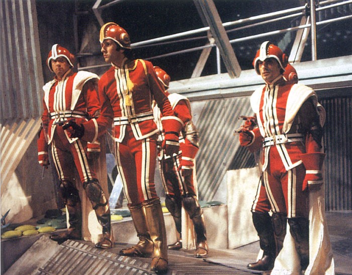
The Chancellery Guard
THE CHAPTERHOUSE GUARD
The Chancellery Guard, Chancery Guard, the Watch
The
Watch grew out of the Council Police of the Gallifreyan Empire of the
Dark Times. Originally they received most of their funding the Pythia’s
Temple Welfare Trust, which insured their loyalty to the Pythia over
that of the Court of Principals. In the modern era the Watch represents Gallifrey’s only real “army" but really it functions more as a police force for the planet. Each
of the six chapters maintain their own chapterhouse branch of this military division. The uniform of these soldiers are the color of their
chapter. The chapter repesented by the current Lord President determines which of these chapterhouse have the honor of being the Chancellery Gaurd of the Capitol. Which means that the scarlet clad Prydonians generally protect the Capitol.The Chancellery Guard battalion is barracked in the Citadel.
Service in the Chancellery Guard is a great honor and most of the
guards are from the oldests of the Great Houses. The guards assigned to
the Capitol have all had more then two centuries of experience.
While the Cheif Coordinator of the CIA was responsible for handeling off-world threats, the Castellan of the Citadel was responsible for dealing with threats on Gallifrey and protecting the Lord President.
The powers of this position were outlined in the Constitution. In
situations where the responsibilities of the CIA and the Castellan
might overlap the Lord President had the power to select who had
authority. The Castellan is selected by the Parliment. Because of the boredom of Gallifrey's virtually crime free society, this position changes hands often, and is often held by a non-Time Lord
(probably due to a lack of any Lord desiring the position). Most Castellans are between 800 and 6,000 years old. The Gallifreyan serving as Castellan was known as the Chatelaine when the position was held by a female Gallifreyan (service in the Chancellery Guard is considered to be male work so its rare for a female to attain this position). The position is also possibly known as Magistrate under certain circumstances. President Borusa decreed that that the Castellan was a non-voting member of the High and Inner Council. He also made the Castellan third in line of succession after the President and the Chancellor. The Watch are supervised from Security Control. From
his office, the Castellan has access to 86,346 other computer systems
throughout Gallifrey. They have access to the Inquistion's Grey, White,
and Black Files.The Lord President and the Castellan are the only Time Lords issued with a transduction buffer. These devices let them transduct any time travel capsule on Gallifrey to anywhere else on the planet.
Beneath the Castellan of the Citadel were the six Deputy Castellans (also known as Chapterhouse Castellans) who oversaw the chapterhouse gaurd of their chapter. Beneath them, each branch was directly lead by a Commander of the Gaurd who had several captains, lieutenants, sergeants, and corporals under his command.
The majority of the Watch is made up of male Gallifreyans from servitor-class houses. Some of the guards are Time Lords. Most of these are Gallifreyans who desire a more exciting life. It is possible for these houses to buy their Gallifreyan a commission. All of the personel attend a
Police Academy where they are trained in
crowd control, investigation, martial arts, and how to resist the mind probe. They are the only ones allowed
to carry weapons in the Capitol and
were issued with bio-data security passes. Heavy blasters were
availible in the armory for when the guard needed to cause major damage
to inanimate matter. Despite this, the Watch has little combat ability and most lack any real fighting skills.
The Watch provides security guard duty,ceremonial escorts for important Time Lords, patrols the city, investigates crimes, and interrogates suspects. Besides
security, the Watch's other duties include dealing with labor disputes
with the Shobogans, and ensuring the maintenance and redecoration of
the Citadel. With forewarning, the Watch can set up a temporal-grace field in any area in the Citadel. Gallifrey has very little crime and the need for a constabulary force is limited. Few crimes rise above vandalism
or the violation of minor laws. Most, if not all, Gallifreyans and Time Lords believe Gallifrey to be
a just and fair society, but cases of Time Lords bribing members of the Watch are not uncommon. Due to their boredom, the Watch tends to respond overly aggressively to any
violation they encounter. They are considered to be brutal, and quick to make assumptions rather than gathering all the facts.
The Watch can use torture on murder suspects, but needs special authority from the council to use the Mind Probe. As long as one answers every question and tells the truth, a properly programed Mind Probe causes no damage or pain.
But if the subject resists the mind probe, it will destroy their mind.
If the probe not properly configured for a lesser species, it can fry
their mind. The mind probe had 15 intensity levels. On
full power, Gallifreyan Mind Probe can take everything a Gallifreyan
knows, ripping a resistant mind from its brain, thought by thought.
This leaves the brain burned out and the body in a vegetative state.
Under Romana's Presidency both torture and the Mind Probe were made
illegal.
When Rassilon was resurrected at the
beginning of the Time War he used the Drylands Precedent to dissolve
the the Watch and the position of the Castellan. The soldiers were
reorganized into the Interior Defence Unit. By the end of the War
Rassilon had re-instated the Citadel Gaurd and title of Castellan.
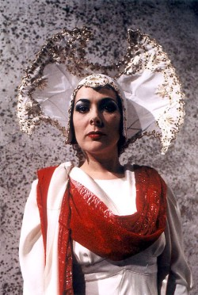
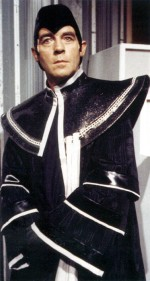
An Inquisitor and a Valeyard
GALLIFREYAN JUSTICE
The Inquistion
The bureaucracy that makes up Gallifrey's jucical system is know as the Inquistion. Trials
generally take the form of a Malfeasance Tribunal (Malfeasance
being defined as ‘the willful and intentional action that injures a
party’). Every Gallifreyan trial and inquiry is overseen by an
Inquisitor who wears a red sash of authority. His white robes probably indicate that he has no loyalty to any one chapter. The Inquisitor is the only one who can call witnesses.While their legal system does have bailiffs and witnesses, there are no juries. A Bronze Usher assists the Inquisitor in ensuring protocal is followed. The Valeyard serves as the learned court prosecutor. Valeyards are also responsible for drafting laws for the council. When court is not in session, the Valeyards can be found in the Inquisitor’s Offices. Again, the Valeyard's black and white robes probably indicate that he has no loyalty to any one chapter.It is traditional for Valyards and Defenders to wear ornate collars while in the court room. Unlike many human courts, Gallifreyan justice tends to work very quickly - often reahing a verdict in a matter of days.
Among the Inquisition, the Supreme
Court of Guardians of Gallifreyan Law is made up of 15 cardinal-judges who are selected by the High Council. It is forbidden to serve
on the High Council and the Supreme Court at the same time. These guardians wear gold and silver robes. Chancellery guards accompany these Inquisitors whenever she leaves the Capitol. Among
the guardians the Inquisitor Prime (aka the Inquisitor General) has
supreme authority over interpretations of Gallifreyan Law. The Supreme Court also has the right to judge non-Gallifreyan time active species or individuals.
The
Inquisition keeps a set of 3 files on all the people who catch its
attention. The Grey File holds those who are being investigated, are
currently on trial, or whose sentencing has not yet been rendered. The
Black File holds the details of subjects who have been found guilty and
sentenced, while the White File records who has been found innocent,
pardoned, suspended the sentence of, or consider to be reformed. The
Castellan has access to all three of these files.
While most cases are only observed by officers of the Watch, in cases where a Time Lord is on trial the entire Supreme Court will witness the trial. The
Convocation of Eternity appears to be the Time Lord court which judges
matters related to violations of the Laws of Time. They
are sometimes known as 'the Grey Council' and handle matters such as
Time Lords caught sending notes to their younger self in violation of the First Law of Time. It
is even possible for the accused to be held responsible for actions and
statements that the Matrix predicts that he will make in his future. These guardians act as advisors
and moderators for the Inquisitor to assist in rendering a verdict. Due to frequent bribery, it is unusual for a Time Lord to ever be put on trial unless the matter involves breaking
the Laws of Time.
After the events of The Deadly Assassin, the Keeper of Matrix was always retained to provide evidence from the Matrix. The
event of the Ravalox Incident lead to a mandate that all Matrix
projections had to be backed up by physical evidence and witness
testimony. By the end of the Time War, trials were rarely used to
determine what happened, but instead the investigation focused on the
morality and motivation behind the accused's actions.
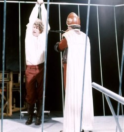
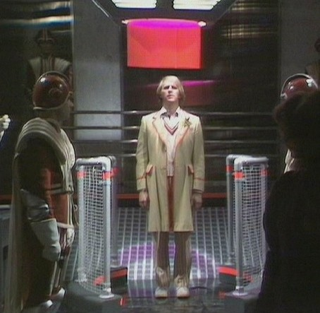
Prisoner undergoing the Mindprobe, and execution
Punishments authorized by the Worshipful and Ancient Law of Gallifrey
"We but administer. You are imprisoned not by this Court, but by the power of the Law."
- Traditional Inquisitor statement when passing Sentence
Temporonic
Biodata Tag
Received by all convicted criminal Time Lords
Takes the form of a biodata tattoo in the form of a serpent dragon on their right arm.
This tattoo is keyed into the subject's entire bio-field and links them to the courts though his own biodata strands.
Gallifreyan prisoners wear gray jumpsuits.
Obliviscence
A mind block is applied to specific memories or skills using a Neural Block
The block's chemicals break down memory acids.
Gallifreyan memory wiping techniques aren't totally reliable and the memories will often reappear as dreams.
This technique became common during the Time of Legend.
Exile to the Wild-Lands
During the Time of Legend Gallifreyans who opposed the Prydonian Chapter would be exiled.
In the modern era, this
is the standard punishment for Gallifreyans who commit criminal acts.
Most Gallifreyans consider it to be a horrifying punishment.
Exile from Gallifrey without a fully functional TARDIS
Exile is always accompanied by a Forced Regeneration.
A common practice often viewed as being worse then death.
At one point, hacking the Matrix was a crime that resulted a prison sentence of 500 years
of exile. This could be reduced to 200 years with good behavior.
Theft of a TARDIS has only one penalty: death
(of one body) and exile. A Fetch Squad is responsible for returning stolen TARDIS.
Often used for violations of one of the Major (first 3) Laws of Time.
Misuse of a TARDIS often resulted in this punishment. Time meddlers, responsible for minor violations of the Laws
of Time were often exiled.
Violent criminals,
who refuse to become outsiders or hermits, were often exiled.
The Disciplinary Forced Regeneration
(probably regarded as a type of death sentence)
Force Regenerations were the standard punishment for both minor and severe crimes.
For conduct unbecoming a Time Lord??
Requires the approval by the High Council
Mandatory punishment for unauthorized use of a Time Capsule (usually included exile as well)
Forced regenerations require massive amounts of power to induce.
These regenerations take much longer to recover from then a normal regeneration.
Indefinite Imprisonment in their own TARDIS
The subject's only escape is to activate the de-materialization switch with will remove them from History turning
them into a neverperson.
Identity Alteration via Biodata Amendment
Retro-active gene manipulation to make a new person who would not commit the crime.
A sentence handed out by the Supreme Court.
Used on aliens who are caught spying on the Time Lords.
Removal of the Time Lord's symbiotic nuclei
Reserved for Time Lords.
During the Time of Legend Gallifreyans who opposed the Prydonian Chapter would have their nuclei removed.
Without a nuclei they no longer a Lord of Time nor can they operate Gallifreyan time travel capsules.
Confiscation of Remaining Lives via Biodata Amendment
Traditionally the criminal's biogenic molecules would be deactivated (and so could can potentially be re-activated.
In some circumstances the unused future incarnations would be confiscated and transfered to another Gallifreyan.
During the Time of Legend Gallifreyans who opposed the Prydonian Chapter would their ability to regenerate taken from them.
In the modern era this punishment is reserved for major violations of the First Law of Time.
Public Stoning
During the Dark Times death by stoning was a common punishment
Afterwards, the head of the deceased was placed on a pole for public display.
The Final Sanction of Termination
It requires a Warrant of Termination to be carried out.
High Treason and assassination of a President are both punishable by vaporization
Major violations of the 1st
(as well as the second and third) Law of Time
(such as aggravated temporal interference) are punished by vaporisation.
Committing an unauthorized Class 2 Intervention (such as setting one's self up as a god of a lesser species)
Hacking into the Matrix (originally this offense carried a standard sentence of only 500 years in prison)
Executions are carried out at the Place of Termination
In the modern era, execution was accomplished via vaporisation inside a
molecular dispersal chamber with a termination tube. The
subject is first vaporised and then the remains of the criminal are
dispersed through time and space to the nine corners of the universe. This process takes about 40 seconds.
Afterward vaporisation, all records of the Time Lord's existence are deleted.
As of Arc of Infinity, Morbius was the only Time Lord to be executed.
Sentenced In Perpetuity
Traditionally the criminal will be frozen within Shada,
But imprisonment in and Oubliette Custody Suite, or a Phantom Sun are also possible.
Often used for violations of one of the Major (first 3) Laws of Time.
Used on criminals (regardless of species) whose existence is viewed as a threat to Gallifrey.
Used on criminals that went places forbidden by the Time Lords or discovered information forbidden by the Time
Lords.
Time Looping a World
Reserved for punishing an entire species
A sentence handed out by the Supreme Court for species that attempt to violate one
of the Major (first 3) Laws of Time.
A sentence of 150,000 years imprisonment is standard for a species missusing temporal powers on the scale that the Legions did.
Unhappening from History
The Time Lords can reverse a person's time stream to remove them from history so that nobody will ever remember they existed.
Gross and extreme violations of the Laws of Time can lead to a Time Lord receiving this scentence.
Used for aliens who are caught spying on the Time Lords.
The Oubliette of Eternity can be used on entire species removing entire worlds from the Web of Time, but this is very rarely done.
Carried out using an Omnicalculator (such as D-Mat gun or the Oubliette of Eternity)
As this punishment is a violation of the First Law of Time it is only enacted in secret by the President or (more often) the CIA.
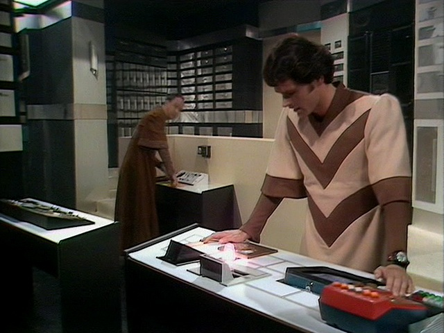
Gallifreyan Technicians
THE CIVIL SERVICE
Ranks that can be held by Non-Time Lords include Castellan, Ordinal-Generals, Ordinals. The Junior Senate is made up
of the Junior Senators, and might be an institution of common Gallifreyans. A famously effective polygonal Zero Room can be found in the basement of the Junior Senate Block. Other organizations include: The Council of the Great Mother, Bureau of Loomographic Records, Causal Archive Record
Office, Matrician Bench of Ordnance Surveyists (monitors the locations of houses
and cities), Brotherhood of Kithriarchs, the Space/Time Accessions Bureau, the Central Office of Temporal Observation, Hospitaller-Surgeons
(handle medical issues, considered to be the finest doctors in the
galaxy), and the Almoner Crest (whose function has been lost to
history).